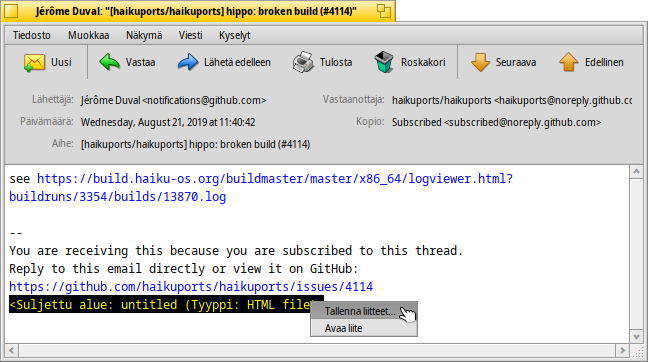
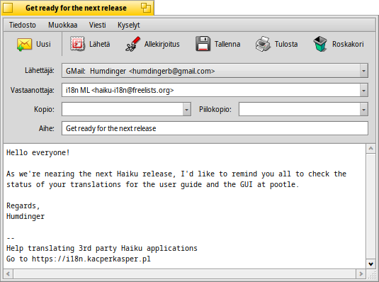
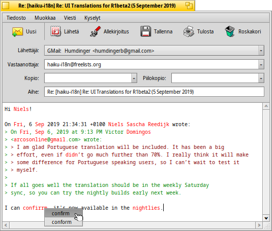
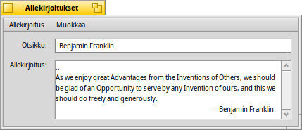
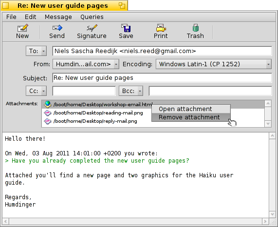
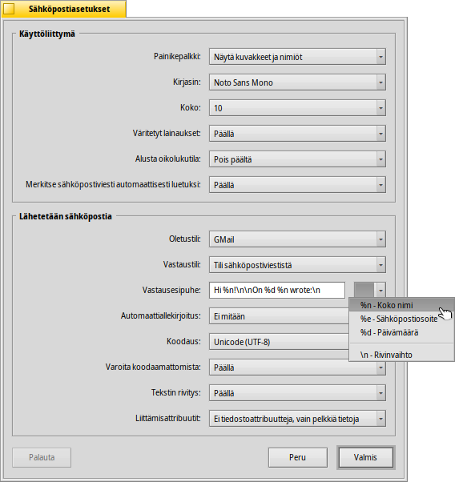

Suomi
Suomi Français
Français Deutsch
Deutsch Italiano
Italiano Русский
Русский Español
Español Svenska
Svenska 日本語
日本語 Українська
Українська 中文 ［中文］
中文 ［中文］ Português
Português Slovenčina
Slovenčina Magyar
Magyar Português (Brazil)
Português (Brazil) English
English| Hakemisto |
| Sähköpostiviestien lukeminen Uusien sähköpostiviestien luominen Asetukset |
 Sähköposti
Sähköposti
| Työpöytäpalkki | ||
| Sijainti | /boot/system/apps/Mail | |
| Asetukset | ~/config/settings/Mail/ ~/config/settings/Mail/Menu Links/ - Tähän laitetut objektit näkyvät sähköpostiohjelman asiayhteysvalikossa ~/config/settings/Mail/signatures/ - Allekirjoitusten tallennuspaikka ~/config/settings/Mail/status/ - Omien tilojen tallennuspaikka |
Sähköposti on Haikun sähköpostiviestien oletuskatselin ja -muokkain. Sillä ei ole mitään tekemistä itse sähköpostiviestien noutamisen ja lähettämisen kanssa, minkä tekee mail_daemon-taustaprosessi ja se voidaan asettaa Sähköpostiasetukset-ohjelmalla.
Tämä sivu on yleiskatsaus Sähköpostisovellukseen. Lisätietoja siitä, kuinka sähköposti toimii Haikussa, löytyy viitteestä Työpaja sähköpostiviestien hallinnointiin.
 Sähköpostiviestien lukeminen
Sähköpostiviestien lukeminen
Sähköpostitiedoston avaamiseksi Sähköpostiohjelmassa sinun on kaksoisnapsautettava sitä. Käyttöliittymä on aika yksinkertainen:
Ylhäällä on valikko ja sen alla valinnainen työkalupalkki sähköpostin kiinnostusalueattribuuteilla (vastaanottaja, lähettäjä, aihe, päivämäärä) ja sähköpostiviestin varsinainen runko. Jos sähköpostiviestissä ilmenee outoja merkkejä tai se on tyhjä, yritä vaihtaa koodausta ponnahdusvalikon -valikosta.
Jos sähköpostiviestissasi on liitteitä, ne on lueteltu viestin lopussa. Hiiren kakkospainikkeealla voi avata asiayhteysvalikon valikkoon tai . Voit myös raahata ja pudottaa liitteen Työpöydälle tai toiseen Seuraaja-ikkunaan.
Useimmat valikon ja työkalupalkin kohdat ovat itsestäänselittäviä, joten keskitymme vain huippukohtiin.
Tiedosto
Kun suljet uuden sähköpostiviestin ikkunan, sen tila vaihtuu normaalisti "Uudesta" "Luetuksi". Mutta voit asettaa myös tiloja valitsemalla tilan alivalikosta . Sieltä löydät myös valitsimen , mikä luo sinun omia tilojas, jotka tallennetaan hakemistoon ~/config/settings/Mail/status/.
Muokkaa
Tästä löydät kohdan valikon (katso alla) avaamiseksi ja pikanäppäimen, jolla hallinnoit valikkokohtaa , joka avaa Sähköpostiasetukset-paneelin.
Katso
Tarvitset näitä kohtaa harvoin, jos koskaan:
| ALT H | Näyttää sähköpostiviestin täydellisen otsakkeen esimerkiksi siltä varalta, että sinun on jäljitettävä sähköpostiviestisi polku. | ||
| Näyttää sähköpostiviestin raakatilassaan, toisin sanoen, kaikkine ohjausmerkkeineen ja esimerkiksi ilman Sähköposti-ohjelman väritettyjä lainauksia tai verkko-osoitteita.. |
Viesti
Eri valinnat sähköpostiviestiin vastaamisessa tarvitsevat ehkä hiukan selittämistä.
| ALT R | Vakio vastaus palvelimelle, joka on lähettänyt sähköpostia sinulle. HUOMAA: Silloin kun on kyse sähköpostituslistapostista, tämä vastaa normaalisti takaisin postituslistalle, ei juuri sille henkilölle, joka kirjoitti viestin! | ||
| OPT ALT R | Toisaalta lähettää suoraan ja vain henkilölle, joka on lueteltu ”Lähettäjä”-attribuutissa. | ||
| VAIHTO ALT R | Vastaa alkuperäiselle lähettäjälle plus kaikille muille alkuperäisen sähköpostiviestin (Kopio-)vastaanottajille. |
Valinnat , and ovat taas aika itsestään selittäviä.
Kun olet avannut sähköpostin Seuraajasta tai kyselytulosikkunasta, ja siirtävät edelliseen tai seuraavaan viestiin luettelossa.
kerää kaikki sähköpostiosoitteet otsakkeesta ja todellisesta sähköpostiviestin rungosta alivalikossa. Osoitteen valitseminen avaa Ihmiset-sovelluksen, jossa voit täydentää ja tallentaa yhteystietoja.
Kyselyt
Tämä ei vielä toimi, mutta tarkoitus on säilyttää kyselyjä, jotka näyttäisivät kaikki parhaillaan avoinna olevaan sähköpostiviestiin liittyvät sähköpostiviestit, kuten kaikki saman lähettäjän viestit tai saman aiheen/säikeen viestit.
Uusien sähköpostiviestien luominen
Uusi sähköpostiviesti luodaan kutsumalla -valikkoa tai vastaavaa kuvaketta avoimen sähköpostiviestin työkalupalkista. Tai voit käynnistää Sähköposti-sovelluksen tai valita Työpöytäpalkin sähköpostikuvakkeen asiayhteysvalikosta.
Ikkuna on melko samanlainen kuin se, jossa luetaan sähköpostia. Valikko ja työkalupalkki on lievästi erilainen ja teksti-ikkunat on täytetty tietysti vastaanottajien sähköpostiosoitteilla, aiheella ja niin edelleen.
-valikossa on luettelo sähköpostiviestin kopion vastaanottajista "carbon copy". Erona "Vastaanottaja"-kenttään on, että Kopio-luettelossa olevien vastaanottajien ei odoteta vastaavan viestiin.
-tarkoittaa viestikopiota, joka ei näy muille vastaanottajille, vaan piilottaa "Kopio"-vastaanottajat toisiltaan.
Voit kirjoittaa useita vastaanottajia erottelemalla vastaanottajat pilkulla. , , ja ovat ponnahdusvalikkoja. Ne sisältävät kaikki sähköpostiosoitteet, jotka sinun järjestelmässäsi löytyvät Ihmiset-tiedostojen kyselyllä. Niiden "Ryhmä"-attribuutti lajittelee ne vastaaviin alivalkioihin.
Keskitymme taas valikkojen mielenkiintoisimpiin ominaisuuksiin.
Tiedosto
Valikolla voit tallentaa työsi toistaiseksi ja tulla siihen takaisin myöhemmin. Sen lataamiseksi uudelleen valitse se alivalikosta , joka luettelee kaikki sähköpostiviestit kyselytilalla "Luonnos".
Muokkaa
ja tai niiden vastaavat pikanäppäimet ALT ← / → käytetään lisäämään/poistamaan lainaustaso säätämällä numeroa ">" symboleja lainausrivien edesssä. Valitse vain jokin tekstiin kaikki ne rivit, jotka haluat lainata ja tai poistaa lainauksesta ja kutsu valikkokohdetta.
tarjoaa nykyisin vain englanninkielisten tekstin oikeinkirjoituksen tarkistusta merkitsemällä väärät ja tuntemattomat sanat punaisella värillä ja näyttämällä ne kursivoituna. Sellaisen sanan avaaminen hiiren kakkospainikkeella avaa asiayhteysvalikon, joka tarjoaa suosituksia sanan korjaamiseksi tai sen hyväksyttyyn sanastoon.
Sitten on taas kohteita avata Sähköposti-ohjelman -valikko (katso alla) ja pikanäppäin , joka avaa Sähköpostiasetukset-paneelin.
Viesti
Valikolla voit lisätä ennakolta määritellyn tekstin sähköpostiviestisi loppuun. Sen alivalikosta voit valita tietyn tekstin tai .
Luot uuden tai muokkaat olemassaolevan allekirjoituksen valikolla , mikä avaa ikkunan, missä kirjoitat itse tekstin ja uuden allekirjoituksensi otsikon. Valikosta löydät alivalikot tietyn allekirjoituksen avaamiseksi tai tallentamiseksi tai parhaillaan ladatun allekirjoituksen poistamiseksi. Allekirjoitukset pitäisi tallentaa kansioon ~/config/settings/Mail/signatures.
Käytä ja tiedostojen lisäämiseksi tai poistamiseksi liitteinä. Voit myös raahata ja pudottaa tiedostot Seuraaja-ikkunasta. Ole varovainen niiden pudottamisessa (Vastaanottaja/Lähettäjä/Aihe -alueella ylhäällä) tai ne liitetään sähköpostitiedoston runkoon, jos ne ovat tekstitiedostoja.
Tiedostoliitteet on lueteltu otsakelohkon alla. Voit poistaa tiedoston kutsumalla asiayhteysvalikkoa tai valitsemalla sen ja painamalla painiketta DEL.
Kyselyt
Tämä ei vielä toimi, mutta se on tarkoitettu säilyttämään kyselyt, jotka näyttävät kaikki parhaillaan avoinna olevaan sähköpostiviestiin liittyvät sähköpostiviestit, kuten kaikki saman lähettäjän tai samaa aihetta tai säiettä koskevat viestit.
Asetukset

Sähköpostiasetukset ovat kahdessa osassa:
Käyttöliittymä
| Valitsimet näyttävät nimiöt kuvakkeiden alla tai piilottavat työkalupalkin kokonaan. | ||
| Asettaa sähköpostiviestin tekstissä käytetyn kirjasintyypin. | ||
| Asettaa kirjasinkoon. | ||
| Värittää lainausten eri tasot. | ||
| Ottaa käyttöön tai pois käytöstä oikeinkirjoituksen tarkistuksen käynnistymisen yhteydessä. | ||
| Jos suljet sähköpostiviestin, jonka tila on "Uusi", se merkitään automaattisesti tilaan "Luettu". |
Sähköpostin käyttö
| Jos sinulla on useita sähköpostitilejä, tämä määrittää, mitä niistä käytetään oletuksena kun luodaan uusi sähköpostiviesti. | ||
| Kun vastaat sähköpostiviestiin, voit joko aina valita , joka asetettiin yllä ponnahdusvalikossa, tai käyttää , mikä lähettää sähköpostiviestin samalle tilille, jolta sen vastaanotit. | ||
Tämä lisätään ennen vastauksesi lainattua tekstiä. Voit käyttää erilaisia muuttujia tekstikentän viereisestä ponnahdusvalikosta. Esimerkki: "Hei %n!\n\n%d kirjoitit:\n" tuottaa tämän:
Hei Dr. Hawking! Mon, 18 Jan 1998 02:55:16 +0800 kirjoitit: > so thanks again for the inspiration concerning the cosmological constant. > ...ja loput lainatusta tekstistä seuraa... | ||
| Lisää allekirjoituksen automaattisesti sähköpostiviestin loppuun. | ||
| Asettaa oletuskoodauksen. | ||
| Jos sähköpostiviestisi sisältää merkkijä, joita ei voida koodata nykyisellä asetetulla koodausmenetelmällä, voit laittaa päälle varoituksen siitä. Se antaa sinulla mahdollisuuden vaihtaa koodausta ennen lähetystä. Muussa tapauksessa koodaamattomat merkit korvataan neliösymboleilla. | ||
| Lisää rivinvaihdon joka 76. merkiksi, mikä helpottaa sähköpostiviestien lukemista. | ||
| Voit valita BFS:n tiedostoattribuuttien lähettämisen liitteen mukana. Tämä on mukavaa muille Haiku-käyttäjille, koska he saavat "täydellisen" tiedoston (ajattele MP3-tiedostojen artisti-, albumi-, otsikkoattribuutteja), mutta ne voivat aiheuttaa hämmennystä (tai jopa epäluuloa) muille, jotka ihmettelevät, että mitä ylimääräiset "BeOS-attribuutti"-liitteet mahtavat olla... Jos valitset, että et lähetä attribuutteja liitteiden mukana, muista tiivistää tiedostosi zip-tiedostoiksi ennen niiden lähettämistä tai BFS-attribuutit riisutaan tiedostoista. |